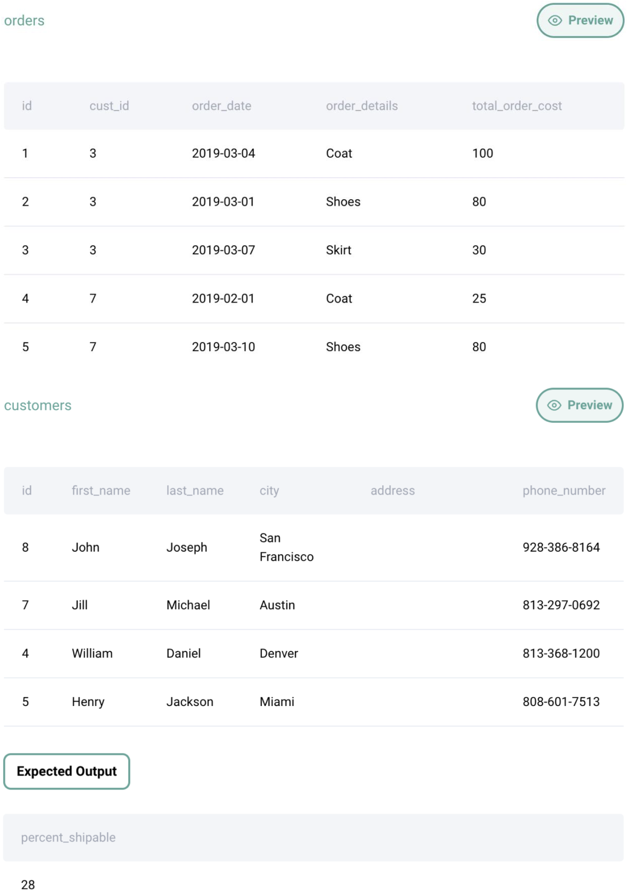

Question sourced from StrataScratch.com.
Database: MySQL
Find the percentage of shippable orders. Consider an order shippable if the customer's address is known.

/*
My strategy: Since each row in the orders table represents a single
order, left join the orders table with the customers table. Use
conditional aggregation to get the total number of rows with a valid
address (i.e. no NULL in the address column), then divide this by
the total number of rows in the result set to get the proportion of
shippable orders.
*/
SELECT 100 * (
SUM(IF(c.address IS NOT NULL, 1, 0)) / COUNT(*)
) AS percent_shippable
FROM orders o
LEFT JOIN customers c ON o.cust_id = c.id;
/*
An alternative (but less intuitive) solution that requires an
understanding of the COUNT function:
*/
SELECT 100 * (
-- Must understand that COUNT(*) counts all rows in the result
-- set, while COUNT(column) counts only the non-null values
-- (i.e. NULL rows are not counted)
COUNT(c.address) / COUNT(*)
) AS percent_shippable
FROM orders o
LEFT JOIN customers c ON o.cust_id = c.id;